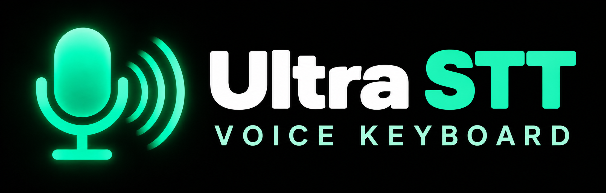

서버의 성능을, 지금 이 기기에서
말한 그대로 듣고,
쓸 문장으로 정리합니다.

녹음은 이 기기에서, 음성 인식과 문장 정리는 내 서버 PC에서 처리합니다. 이 기기에 AI 모델이나 API 키를 설치할 필요가 없습니다.
Whisper large-v3
Codex cleanup
100% local by default
음성으로 입력
한국어 · Whisper large-v3 · Codex 정리
마이크를 누르면 녹음을 시작합니다.
취소하면 이번 녹음은 서버의 처리 결과에도 사용하지 않습니다.
READY TO USE